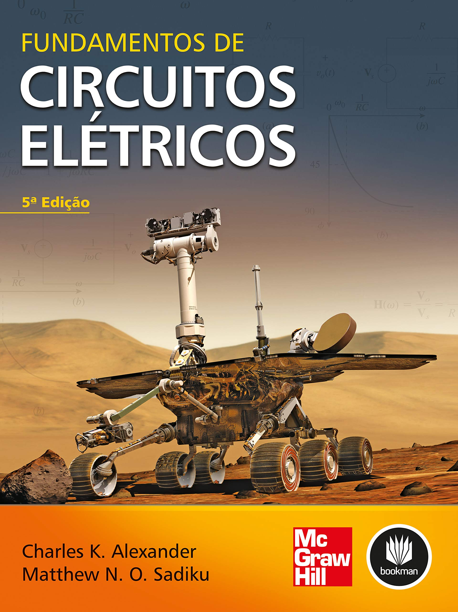
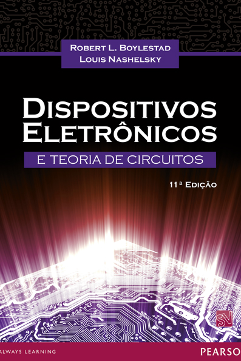
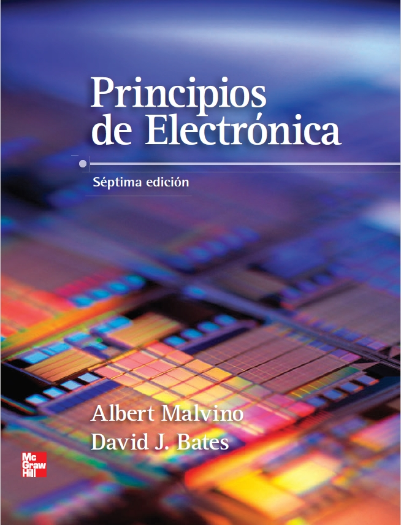

Apresentação do curso
Ementa
Prof. Henrique Amorim - UNIFESP - ICT - Engenharia Biomédica
- Nilson, J. W.; Riedel, S. A; Circuitos elétricos; 8ª Edição; Editora: Pearson; 2008
- Alexander, C.K., Sadiku, M. Fundamentos de Circuitos Elétricos; 5ª Edição; Editora: Mc Graw Hill - Bookman; 2013
- Boylestad, Robert L.; Introdução à Análise de Circuitos; 10ª Edição; Editora: Prentice Hall; 2004
- Boylestad, Robert L.; Dispositivos Eletrônicos e Teoria de Circuitos; 11ª Edição; Editora: Pearson; 2013
- Malvino, Albert Paul; Eletrônica Vol. 1; 7ª Edição; Editora: Amgh; 2008





A edição do livro pouco influencia o conteúdo